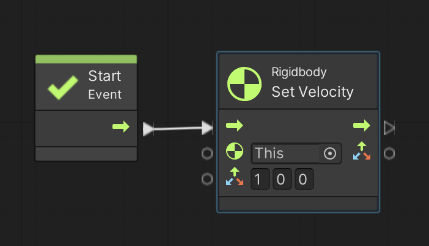

次はゲームオブジェクトを移動させましょう。
ゲームオブジェクトの移動方法には「速度を直接変更する方法」と「力を与えて物理的に動かす方法」があります。
分かりやすいのは速度を直接変更して動かす方法なので、まずこちらから説明します。
演習を行う前に新しいシーンを作り、箱を作成します。
アセットフォルダの Scenes フォルダの中にシーンを新規作成し、シーン名を「Idou Scene」にする。背景色は任意で構わない
新規作成したシーンへ移動する
ヒエラルキー右クリック → 3D Object → Cube で箱を新規作成し、名前を「HAKO」、Position を (0,0,0)にする
HAKO に Rigidbody コンポーネントをアタッチする
HAKO のインスペクタを表示して Rigid Body の Use Gravity のチェックを外す
またゲームオブジェクトを動かすためにはスクリプトを作る必要があるので、こちらを参考にして Visual Scripting のセットアップもします。
アセットフォルダの空いている部分を右クリックしてメニューを表示し、Create → Folder でフォルダを新規作成し、「Scripts」という名前に変更する
Scripts フォルダの中に入り、空いている部分を右クリックしてメニューを表示し、Create → Visual Scripting → Script Graph を選ぶ
Scripts フォルダ内に「New Script Graph」というアセットが出来るので「Idou Script」に名前を変更する
HAKO に Script Machine コンポーネントをアタッチする
Script Machine の Graph の None と書いてあるセルに Idou Script をドロップする
結論を言うと Rigidbody Set Velocity ユニットを使って移動速度を設定できます。
なお3次元空間なので、速度は3次元ベクトル(Vector3)を使って x,y,z 方向別に指定します。
これを「速度ベクトル」と言います。
では早速図1を実行してください。
右方向に 1 メートル/秒の速度で動き始めると思います。
図1. 速度を直接変更

ところでゲームオブジェクトの向きを使って移動方向を指定したい時があります。
ゲームオブジェクトの向きも3次元ベクトルで表すことが出来て、これを「方向ベクトル」と呼びます。
さてゲームオブジェクトの方向ベクトルは以下の3つのユニットで取得できますので、これらを速度ベクトルとして Rigidbody Set Velocity ユニットに入力します。
なお方向ベクトルの長さは常に 1 なので、ゲームオブジェクトは指定した方向に 1 メートル/秒の速度で動き始めます。
では図2を実行してください。
Transform Get Right は右方向ベクトルですので、HAKO は右方向に 1 メートル/秒の速度で動き始めます。
うまく動いたら前方向や上方向にも動かして下さい。
図2. ゲームオブジェクトの向きで移動方向を指定
また移動速度を変更したい時は適当な Float 型の変数を用意し、その変数を方向ベクトルにかけてから Rigidbody Set Velocity に入力します。
もしかける値がマイナスの時は逆方向に移動します。
例えば図3では speed という Float 型の Graph 変数に -5 を指定し、右方向ベクトルにその speed をかけてますので、左方向に 5 メートル/秒で移動します。
うまく動いたら速度を変えたり、前方向や上方向にも動かして下さい。
図3. 移動速度を指定
また方向ベクトルを足し合わせる事で斜め方向など好きな方向に動かすことも出来ます。
以下の図4は右斜め上方向に速度 speed で動かす例です。
なお単純に
速度ベクトル = (右方向ベクトル + 上方向ベクトル) x speed
で速度ベクトルを計算すると三平方の定理より斜め方向に $\sqrt{2}$ x speed の速さで動いてしまうので、Vector3 Normalize(Value) ユニットでノーマライズ(長さ1のベクトルにすること)してから speed をかける必要があります。
図4. 方向ベクトルを足し合わせ、ノーマライズしてから speed をかける
さらにコントローラ入力とも組み合わせてみましょう。
Input Get Axis Raw ユニットを使うと上下左右入力に従って 1 か 0 か -1 という値を取得出来ますので、その値を方向ベクトルにかけることでコントローラに入力にした方向に従ってゲームオブジェクトを動かす事ができます。
例えば図 5 を実行して上下左右入力をしてみて下さい(イベントが Start から Update に変わってるのに注意)。
Update イベントの中で左右方向ベクトルと上下方向ベクトルを足し合わせ、ノーマライズしてから speed をかけてます。
図5. コントローラを使ってゲームオブジェクトを動かす例
上手く動いたら Vector3 Normalize(Value) ユニットを外して試して下さい。
ノーマライズしないと斜め方向に$\sqrt{2}$ = 約1.4倍の速さで動いてしまうことが分かります。